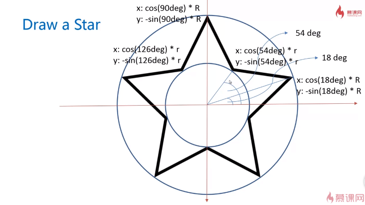

这是一个css渐变
画笔属性
- lineWidth:线宽，默认1px 若想细且清晰 +-0.5
- lineCap:线末端类型 butt默认、round、square
- lineJoin:相交线的拐点 miter默认、round、bevel
- miterLimit:默认为10，只有在lineJoin为miter时有效果，表示尖角的长度（简单理解），在需要特别显示出尖角的时候适用
- strokeStyle:线的颜色
- fillStyle:填充颜色
- setLineDash:设置虚线 setLineDash([5,10,15])虚实交替
- getDashOffset:设置虚线偏移量（负值向右）getDashOffset=-20
非零环绕规则
渐变
线性渐变
- step1:var grd = context.createLinearGradient( xstart,ystart,xend,yend )
- step2:grd.addColorStop(stop,color)
径向渐变
- step1:var grd = context.createRadialGradient( x0,y0,r0,x1,y1,r1 )
- step2:grd.addColorStop(stop,color)
图片填充背景
- context.createPattern( img/canvas/video,repeat-style )
- repeat-style:no-repeat/repeat-x/repeat-y/repeat
fillStyle赋值场景(strokeStyle)
- color （颜色作为背景色）
- gradient (渐变)
- img
- canvas （其他动画作为背景色）
- video
绘制矩形
- rect(x,y,w,h)无独立路经
- strokeRect(x,y,w,h)有独立路经，不影响别的绘制
- fillRect(x,y,w,h)有独立路经，不影响别的绘制
- clearRect(x,y,w,h)擦除矩形区域
绘制圆弧
- arc( centerx,centery,radius,startingAngle,endingAngle,anticlockwise=false)
- arcTo( x1,y1,x2,y2,radius)
- strokeRect(x,y,w,h)有独立路经，不影响别的绘制
- fillRect(x,y,w,h)有独立路经，不影响别的绘制
- clearRect(x,y,w,h)擦除矩形区域
canvas 图形变换
图形变换
- translate(x,y)位移
- rotate(deg)旋转
- scale(sx,sy)缩放
应用函数
- cxt.save() 保存图形当前节点
- cxt.restore() 返回图形之前保存的节点状态 与save成对出现 防止图形变换状态叠加
五角星
